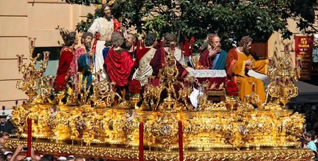
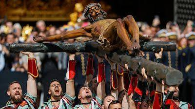
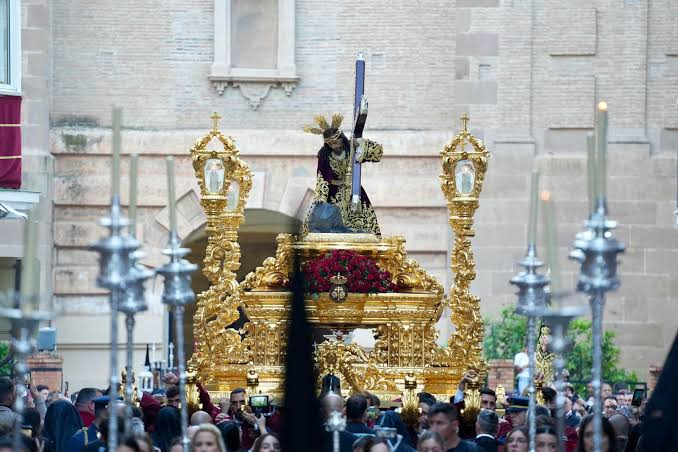
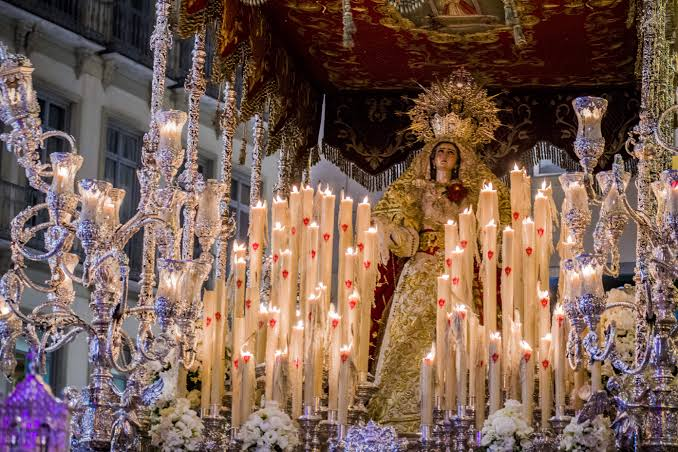
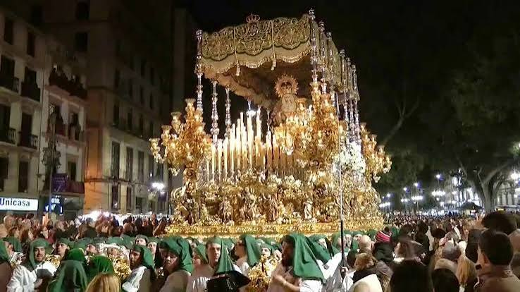
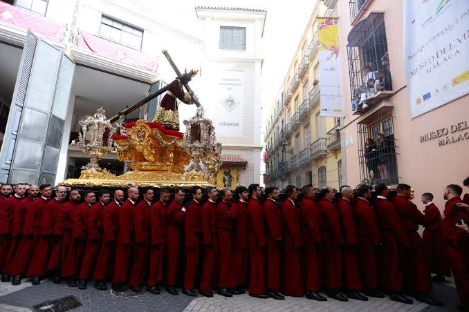
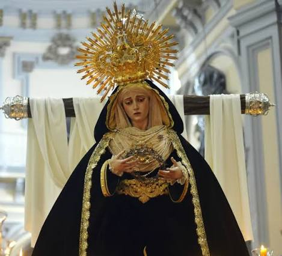

Historia, devoción y el caminar del Cautivo
El Jueves Santo es una de las jornadas más intensas y universales de Málaga. El desembarco de la Legión por la mañana para acompañar al Cristo de la Buena Muerte (Mena) congrega a miles de personas. Al caer la noche, la solemnidad y el señorío toman las calles con los colosales tronos de la Esperanza, el paso majestuoso de la Sagrada Cena, Viñeros, Santa Cruz, Zamarrilla y la sobriedad medieval de la Vera Cruz.

Cena
El trono del Sagrado Descendimiento y la Sagrada Cena es uno de los más pesados e imponentes de la ciudad, al portar a Jesús junto a las esculturas de los doce apóstoles.

Mena
Vinculada a la Legión Española. El desembarco de los legionarios en el puerto por la mañana y el canto del "Novio de la Muerte" al Cristo es el evento más masivo de la semana.

Misericordia
Conocida popularmente como "El Chiquito" debido a las reducidas proporciones originales de la imagen del Señor de la Misericordia, muy querido en el barrio de El Perchel.

Zamarrilla
Famosa por la leyenda del bandido Zamarrilla, quien se ocultó bajo el manto de la Virgen huyendo de la justicia. Al salvarse, le clavó una rosa blanca que milagrosamente se volvió roja.

Esperanza
La gran procesión del Jueves Santo. El trono de la Virgen camina sobre una impresionante alfombra de romero natural que inunda de aroma toda la ciudad.

Viñeros
Hermandad oficial del gremio de los viticultores de Málaga. Su portador lleva las llaves de la ciudad y el trono del Cristo cuenta con detalles alegóricos al vino y la uva.

Santa Cruz
Cofradía de silencio y estricta penitencia que contrasta con el bullicio habitual del Jueves Santo, transmitiendo un profundo recogimiento por el centro histórico.